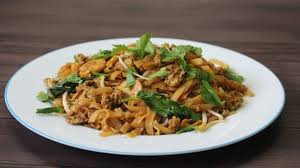
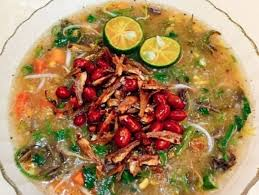
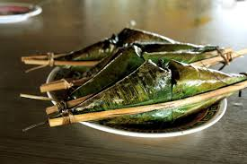
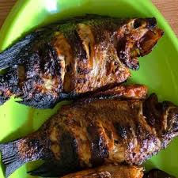

Makanan Khas Pontianak

Mie Tiaw Sapi Pontianak
Mie pipih lebar berbahan beras ditumis dengan irisan daging sapi empuk dan taoge segar. Kuah kaldu sapi yang gurih kaya rempah menjadikannya ikon kuliner Pontianak sejati.

Bubur Pedas Sambas
Bubur sayuran khas Melayu Sambas dengan lebih dari 40 jenis bumbu dan rempah. Dimasak perlahan hingga aromanya meresap sempurna. Makanan warisan yang dinikmati saat sarapan.

Pengkang (Lemang Tepi Sungai)
Ketan isi udang ebi yang dibakar dalam bambu kecil. Disajikan dengan sambal hijau pedas. Jajanan khas tepi Sungai Kapuas yang hanya ada di Pontianak.

Ikan Bakar Kapuas
Ikan sungai segar — jelawat, toman, atau patin — dibakar arang dengan bumbu kecap dan rempah. Dinikmati langsung di tepi Sungai Kapuas saat matahari terbenam.

Chai Kwe (Kue Cai)
Kue kukus tipis berbahan tepung beras berisi rebung, bengkoang, atau kucai. Warisan kuliner Tionghoa Pontianak yang dimakan dengan kecap asin dan bawang goreng.